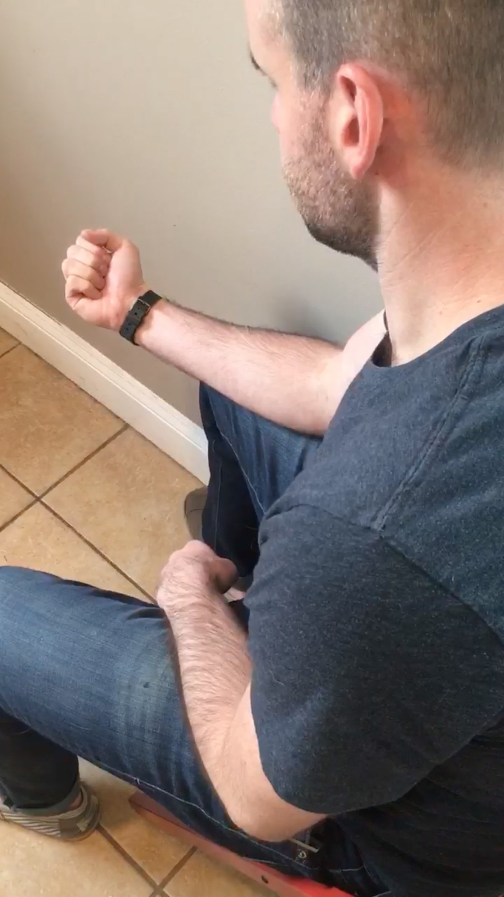

Grab a handful of food. Hold it tightly in your fist so he can smell it but can't get it.
Set up steady
Sit on the floor or in a chair. Hold your fist palm up, keeping your arm steady so it doesn't become something to chase.

Attack of the hungry puppy
Your dog will smell the food and start to go after your hand. Keep still and let him sniff, lick, and nudge.
An opportunity emerges
When he pauses his attack, open up your hand. When he rushes back, close it again before he gets a taste. Rinse and repeat.
Bingo!
He'll figure out that your hand stays open as he leans back. When he does, reward him right away with the other hand. Give him a piece of that deliciousness.
Finish strong
After about 5 minutes of this, look for a great rep to end on. When he nails it, reward him with the rest of his meal in the usual bowl or kong. That's it!